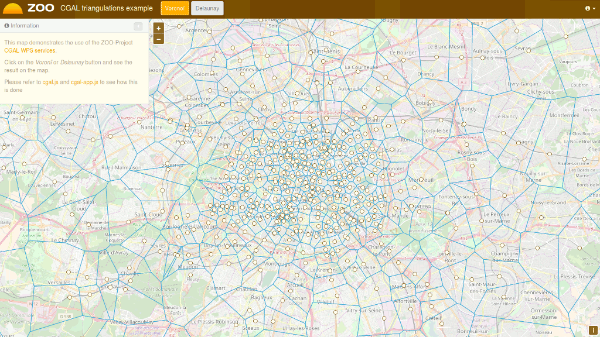

Guía de Inicio Rápido de Zoo Project¶
ZOO-Project proporciona un marco de trabajo de Servicio de Procesamiento Web (WPS) amigable para desarrolladores, a fin de crear y encadenar Servicios de Procesamiento Web. Un WPS proporciona acceso web a funciones que ejecutan algoritmos espaciales.
Iniciar ZOO-Project¶
En el menú Inicio, seleccione .
Firefox abrirá la página de inicio de demostración del ZOO Project. Desde aquí, puede seleccionar una demo de aplicación.

Demostración de herramientas espaciales OGR¶
En la página de inicio de la demostración del ZOO Project, haga click en view en las herramientas espaciales de OGR.
Haga click en el mapa para seleccionar una característica en el servidor WFS GeoServer, la función se mostrará en azul.
Haga click en un proceso de geometría simple como Buffer, Centroid, ConvexHull o Boundary y el resultado se mostrará en amarillo.

Ahora seleccione otra característica cerca de la primera que haya seleccionado y, a continuación, haga click en un botón de proceso de varias geometrías como Unión, Intersección, Diferencia simétrica o Diferencia para obtener el resultado que se muestra en rojo en el mapa.

Demostración de triangulaciones CGAL¶
En la página de inicio de la demostración del ZOO Project, haga click en vista en las triangulaciones CGAL.
Pulse el botón Voronoi o Delaunay para mostrar en el mapa el resultado de la ejecución del servicio WPS, como se muestra a continuación.

{kind=link}
Demostración de Aplicaciones OTB¶
En la página de destino de la demostración del ZOO Project, haga click en ver en la aplicación OTB.
Rellene el formulario de la izquierda para configurar la ejecución del servicio WPS.
Una vez que haya seleccionado los valores para su procesamiento, presione el botón Ejecutar en la parte inferior del formulario izquierdo.
Si elige image/png como formato de salida, verá el resultado del procesamiento que se muestra en el mapa. Puede ver a continuación una ejecución de KMeansClassification de ejemplo al seleccionar el formato de salida image/png.

¿Qué sigue?¶
- Se pueden acceder a las capacidades del servidor WPS ZOO:
http://localhost/cgi-bin/zoo_loader.cgi?Request=GetCapabilities&Service=WPS
Para más preguntas puedes contactar con la lista de correo de ZOO Project: zoo-discuss@lists.osgeo.org